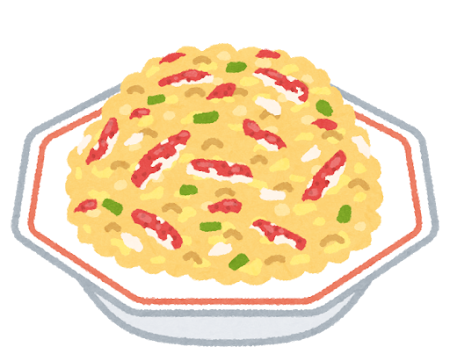
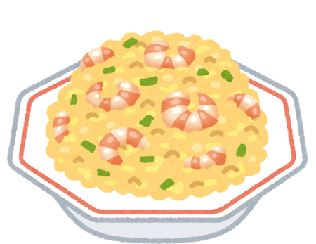

Fried Rice: The Wok’s Greatest Creation

From Leftovers to Legend
Fried rice (炒飯, chao fan) was born from practicality: leftover rice, stir-fried in a hot wok with whatever was on hand. Its origins likely date to the Sui Dynasty (589–618 AD), and it has been a fundamental part of Chinese home cooking ever since.
The dish is a masterclass in wok hei (鑊氣) — the “breath of the wok” — that elusive smoky, charred flavor that comes from cooking over extremely high heat. A restaurant wok burner can exceed 100,000 BTU, and a skilled chef tosses the rice through the flames, each grain separately coated in oil and kissed by fire.
Yangzhou Fried Rice
The most famous style is Yangzhou fried rice (揚州炒飯), named after the city in Jiangsu Province that was a prosperous trading hub along the Grand Canal. This version features shrimp, char siu pork, egg, scallion, and peas — a perfect balance of protein, vegetable, and rice. It became the standard for Chinese fried rice worldwide.


The Egg Debate
Ask any Chinese cook about fried rice and you will start a debate: do you scramble the egg separately and mix it in, or do you coat the rice in raw egg before it hits the wok (the “golden fried rice” method)? Both have passionate advocates. The golden method wraps each grain in egg, creating a luminous yellow color. The scrambled method gives distinct pockets of fluffy egg throughout.
Japan’s Chahan
In Japan, fried rice is called chahan (チャーハン) and is a staple of every Chinese restaurant and ramen shop. Japanese chahan tends to be lighter in seasoning, with a cleaner taste that reflects the Japanese palate. It is often served alongside ramen or gyoza as part of a set meal — the ultimate comfort combination.
Fried rice is democratic. It does not demand expensive ingredients or special tools — just heat, timing, and the wisdom to turn yesterday s rice into today s feast.